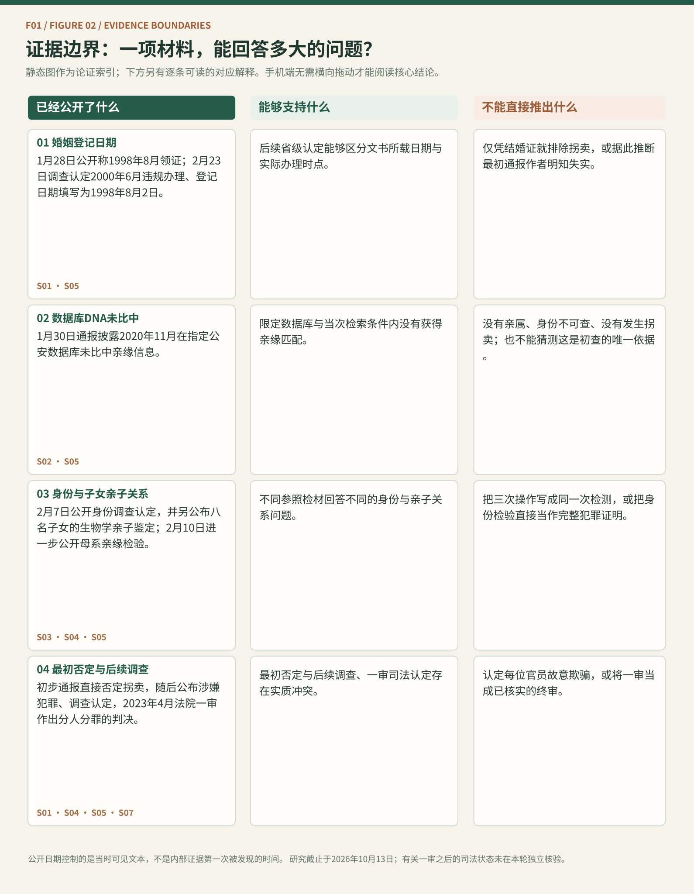
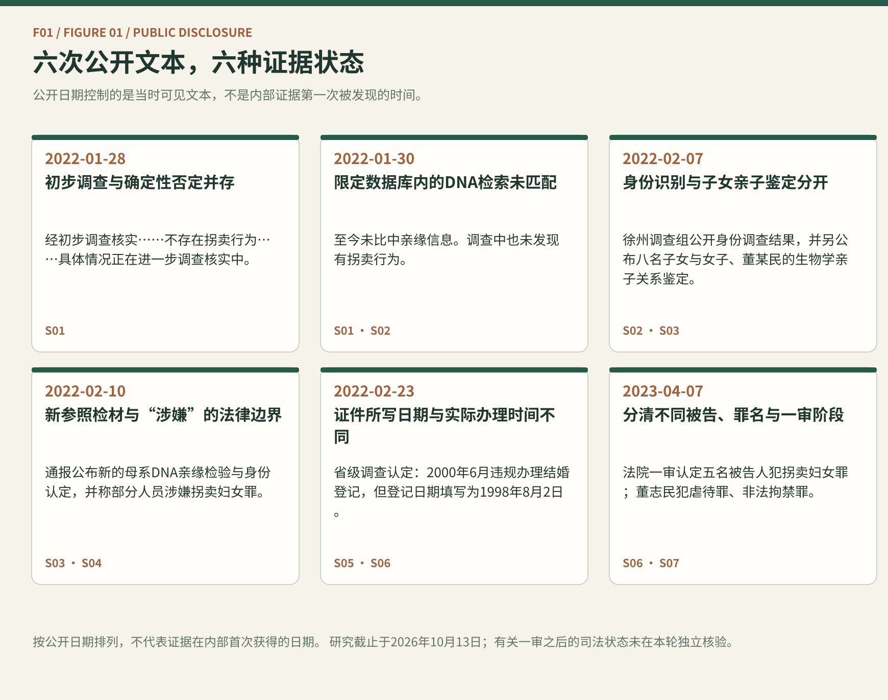

S01 · 2022-01-28 · 丰县县委宣传部首次通报
澎湃新闻同期转载；原微信发布页面尚未独立认证
查看承载页面 ↗公开日期控制的是当时可见文本，不是内部证据第一次被发现的时间。
01 / EVIDENCE TIME MACHINE
你的判断
02 / CLAIM × EVIDENCE
S01 · S05
S02 · S05
S03 · S04 · S05
S01 · S04 · S05 · S07


RESEARCH ESSAY / F01
2022年丰县最初的公开通报如何在后续调查与司法材料中得到修正？本研究让你把“证据已经公开什么”和“后来才知道什么”分开。
2022年1月28日的说明把三个不同性质的表达放在一起：经初步调查、1998年8月领证结婚、“不存在拐卖行为”，以及情况仍在进一步核查。程序未结束与某项事实已获确认在逻辑上可以并存；问题在于公众能否核对这一强否定判断的依据。[S01]
我们不能因为后来出现反证，就倒推1月28日撰稿者一定掌握全部关键证据，更不能自动认定故意欺骗。但同一通报的一句“进一步调查”，也不能替代对“不存在”这一断言的证明。
最初公开说法把1998年8月描述为领证时间。2月23日省级调查则认定，婚姻登记于2000年6月违规办理，所填登记日期为1998年8月2日。[S01][S05]
字段上写的日期与实际办理行为不是同一个变量。更进一步，婚姻登记的存在本身，也不能直接证明此前不存在拐卖或存在真实自愿。这是证据适用边界问题，而不需要对个体心理状态作猜测。
1月30日通报披露：2020年11月将DNA录入两个指定公安数据库比对，未比中亲缘信息；通报又写调查未发现拐卖。两句话相邻，并不意味着本项目已取得官方完整的因果推理链。[S02]
2月7日披露的八名子女亲子鉴定与2月10日披露的母系亲缘检验，是不同目的、不同参照检材的操作。2月9日这一实际检验日期是在2月23日省级通报中明确公布的，不能提前补入2月10日的公开信息界面。[S03][S04][S05]
2月10日有关拐卖罪名的表述仍是“涉嫌”；2月23日省级调查公布了更全面的拐卖与转卖调查信息及失实通报问责。[S04][S05]
2023年4月7日，徐州市中院一审认定五名被告人犯拐卖妇女罪，另认定董志民犯虐待罪、非法拘禁罪。不同被告人与罪名必须分别列示；本项目没有在本轮核实全部后续上诉或生效程序。[S07]
省级调查公开指出初期通报失实，并对相关审核、发布责任人员作出纪律和行政处理。新华社当时也公开报道和批评了初期通报草率的问题。[S05][S06]
因此，本作品不能宣称官方从未纠正，也不能声称我们是首次揭示错误。独立增量在于：按公开时间展示一条事实断言怎样与新证据对照、应被修正到什么范围，以及纠正本身如何进入公共记录。
及时公开与审慎表达并不矛盾。公共机构可以分别说明“已经确认”“尚未确认”“目前未发现但不能排除”，并告知依据范围、后续核查步骤与何时更正。
这种标准并不要求初报掌握全部事实，也不将沉默视为更好的选择。它要求的是：公共结论能够停在其证据实际抵达的位置。
RESEARCH ESSAY / F01
2022年豐縣最初的公開通報，如何在後續調查與司法材料中得到修正？本研究請讀者分開辨認「當時已公開甚麼」與「後來才知道甚麼」。
2022年1月28日的說明同時包含「經初步調查核實」、1998年8月領證結婚、「不存在拐賣行為」，以及情況仍在進一步查核。程序尚未結束與某項事實已獲確認，邏輯上可以並存；問題在於公眾能否查核強烈否定判斷的依據。[S01]
不能因為後來出現反證，就倒推起草人當時一定掌握所有關鍵證據，更不能自動認定蓄意欺騙。但「進一步調查」也不能代替對「不存在」這項斷言的證明。
最初的公開說法將1998年8月描述為領證時間。2月23日省級調查則認定，婚姻登記於2000年6月違規辦理，所填登記日期為1998年8月2日。[S01][S05]
文件上記錄的日期與實際辦理行為不是同一個變數。婚姻登記的存在，也不能直接證明之前未曾發生拐賣，或當事人自願作出婚姻決定。
1月30日通報披露，2020年11月將DNA資料輸入兩個指定公安資料庫比對，未比中親緣資訊；另表示調查未發現拐賣。兩句相鄰不等於我們已經取得其內部因果推理鏈。[S02]
2月7日公開的八名子女親子鑑定，與2月10日公布的母系親緣檢驗，目的和參照檢材不同。實際檢驗日期2月9日，是2月23日省級通報才明確披露的，不宜提前加入2月10日的公開資訊視角。[S03][S04][S05]
2月10日對拐賣罪嫌的表述仍是「涉嫌」；2月23日省級調查進一步公開拐賣及轉賣情節，也對失實通報進行問責。[S04][S05]
2023年4月7日，徐州市中院一審認定五名被告人犯拐賣婦女罪；另認定董志民犯虐待罪及非法拘禁罪。必須區分不同被告與罪名；本輪未完成全部上訴或生效程序的獨立查核。[S07]
省級調查指出最初的通報失實，並對相關審核及發布責任人作出紀律與行政處分。新華社當時也公開報導並批評初期通報草率的問題。[S05][S06]
因此，不能聲稱官方始終沒有更正，也不能說本作品首次揭示通報失實。我們的貢獻是按公開時點建立可核對的「主張—證據—修正」關係。
及時公開與審慎措辭並不矛盾。機關可以清楚區分「已確認」「尚未確認」「目前未發現但不能排除」，說明證據適用範圍、後續步驟及更正方式。
這並非要求機關在初報時掌握全部真相，也不是鼓勵沉默，而是要求結論停在證據真正能到達的位置。
RESEARCH ESSAY / F01
A January 2022 county statement in Feng County, China, was later contradicted by official investigations and a first-instance judgment. Explore what was public at each point—and what only became known later.
On 28 January 2022, Feng County’s public statement said its inquiry was preliminary, reported a marriage registration in August 1998, asserted that no trafficking had occurred, and added that the matter remained under investigation. An ongoing inquiry and a well-established finding are not logically incompatible. The question is whether the public could scrutinize the basis for such a categorical denial.[S01]
The later contradiction does not prove what the initial drafters knew internally, much less establish intent to deceive. Equally, a general ongoing-investigation caveat is not an evidentiary explanation for every separate definitive claim.
The first statement described August 1998 as the time a marriage certificate was obtained. The provincial inquiry published on 23 February reported that the registration was actually processed irregularly in June 2000, while 2 August 1998 was entered as the registration date.[S01][S05]
The date in an official record and the date an act actually occurred are different variables. Even a genuine marriage-registration document cannot, by itself, rule out an earlier trafficking event or demonstrate voluntary consent.
The 30 January notice disclosed that a November 2020 DNA search against two specified police databases had not returned a kinship match. It separately stated that investigators had not found trafficking. Those adjacent sentences do not reveal a complete causal chain from one result to the other.[S02]
The 7 February parentage test involving eight children and the maternal-kinship comparison reported on 10 February addressed different questions using different reference material. The precise 9 February date of the latter test appeared explicitly in the 23 February provincial report; it must not be retroactively inserted into the information available on 10 February.[S03][S04][S05]
On 10 February, some individuals were described as suspected of trafficking. The provincial inquiry on 23 February published further investigative findings, along with sanctions relating to inaccurate public notices.[S04][S05]
On 7 April 2023, the Xuzhou Intermediate People’s Court issued a first-instance judgment convicting five defendants of trafficking women and Dong Zhimin of abuse and unlawful detention. Defendants, charges and procedural stage must be distinguished. This review does not independently establish every later appeal or finality step.[S07]
The provincial inquiry acknowledged inaccurate early notices and published disciplinary or administrative sanctions for relevant decision-makers. Xinhua had already reported and criticized the original notice’s deficiencies at the time.[S05][S06]
We therefore cannot claim that the authorities never corrected the record, or that we are the first to identify the false statement. Our independent contribution is a reproducible disclosure-time map connecting claims to evidence and subsequent corrections.
Timely disclosure and calibrated language are compatible. An institution can identify what is confirmed, what remains unverified, what has not been found but cannot be excluded, and when the record will be updated.
This standard neither demands omniscience at the outset nor encourages silence. It asks that public claims stop where the available evidence stops.
03 / ILLUSTRATIVE RESPONSE
04 / LIMITS
05 / SOURCE REGISTER
澎湃新闻同期转载；原微信发布页面尚未独立认证
查看承载页面 ↗澎湃新闻1月31日转载1月30日晚间发布的通报
查看承载页面 ↗凤凰网2月7日转载署名“徐州发布”的完整通报；人民网同期报道佐证
查看承载页面 ↗新华网转载徐州发布微博文稿
查看承载页面 ↗江苏网信网刊载省级调查全文（来源注明交汇点）
查看承载页面 ↗作为先前研究与反向证据，不声称本项目首次揭示错误
查看承载页面 ↗新华社同期报道法院一审，非完整判决书；未独立核验后续终审状态
查看承载页面 ↗